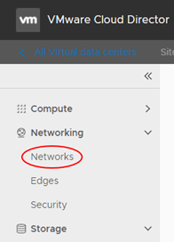
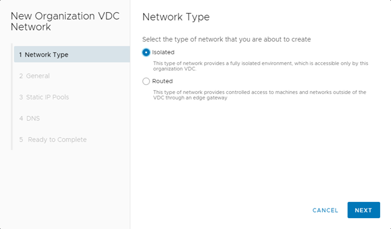
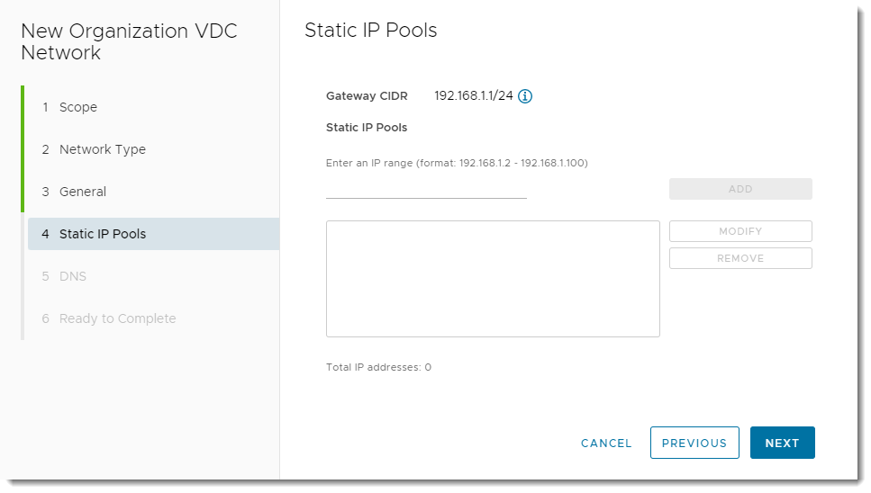

How to create an isolated VDC network
Overview
An organisation virtual data centre network enables its virtual machines (VMs) to communicate with each other or to provide access to external networks. A single VDC can have multiple networks.
There are two network flavours, isolated and routed:
An isolated (internally connected) network is one that only VMs within the VDC can connect to. This article describes how to create an isolated VDC network.
A routed network (externally connected) provides access to machines and networks outside the VDC via the edge gateway. You can have up to nine usable routed networks per VDC. Creation of routed networks is described in How to create a routed VDC network.
Creating an isolated network
In the VMware Cloud Director Virtual Data Center dashboard, select the VDC in which you want to create the network.
In the left navigation panel, under Networking, select Networks.

Click New.

On the Network Type page of the New Organization VDC Network dialog box, select Isolated, then click Next.

On the General page:
Enter a Name and Description for the network.
In the Gateway CIDR field, enter the gateway address for the network.
Select the Shared option to make the network available to other VDCs within the same organisation.

Click Next.
On the Static IP Pools page, in the Static IP Pools field, enter a range of addresses to be consumed by the VMs connecting to the network, then click Add.
As an example, if you give the gateway address as
192.168.1.1/24, you may then want to create a Static IP Pool of192.168.1.10-192.168.1.100. This will give you a pool of 91 IP addresses to assign to machines within your network. You can always increase this later if needed.You can add multiple IP pools.

Click Next.
On the DNS page, enter DNS information if possible.

Click Next.
On the Ready to Complete page, review your selections then click Finish.
Next steps
Now you've created your network to connect the VMs in your VDC, you may want to start building some VMs. For a walkthrough on how to do this, see How to build a virtual machine with UKCloud for VMware.
Feedback
If you find a problem with this article, click Improve this Doc to make the change yourself or raise an issue in GitHub. If you have an idea for how we could improve any of our services, send an email to feedback@ukcloud.com.